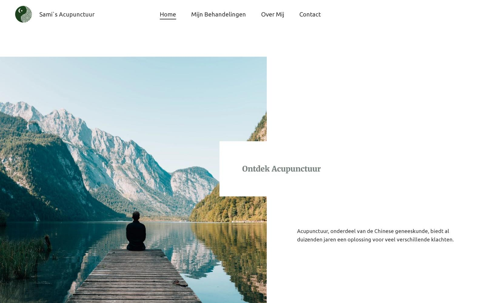
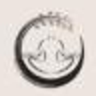
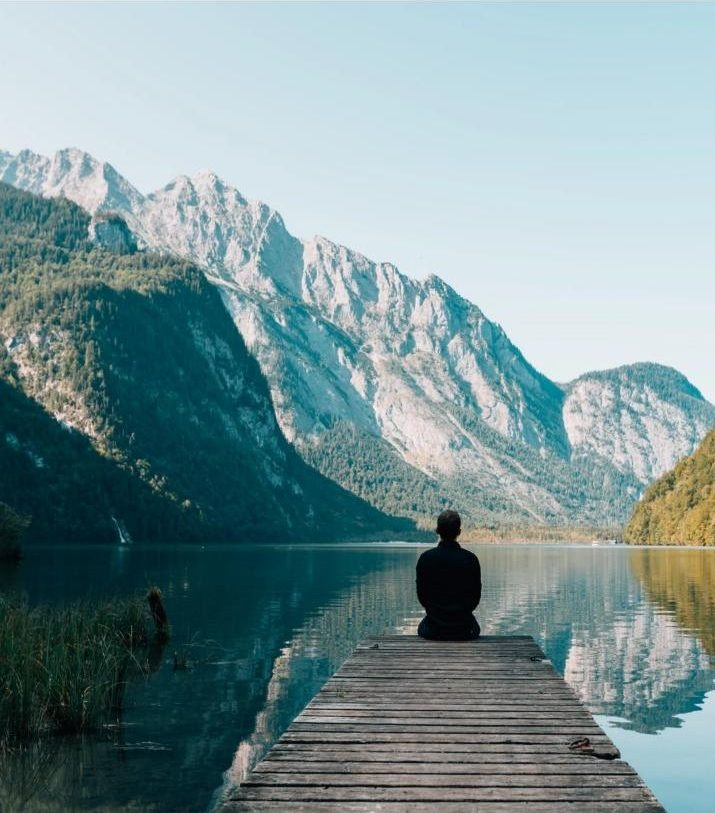
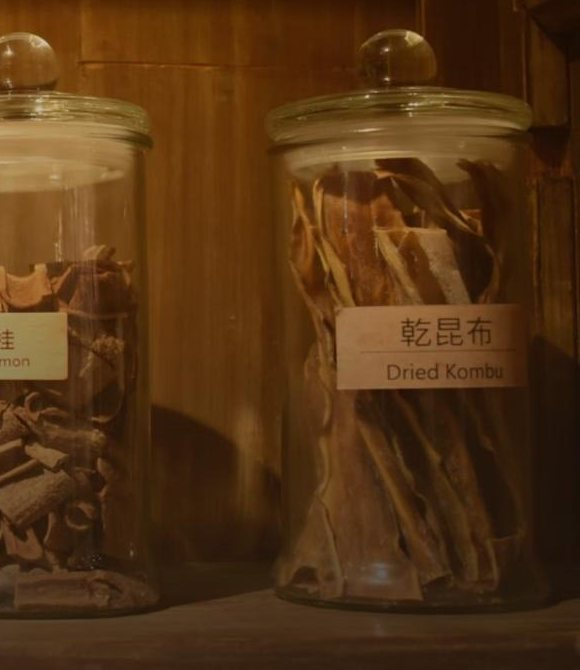
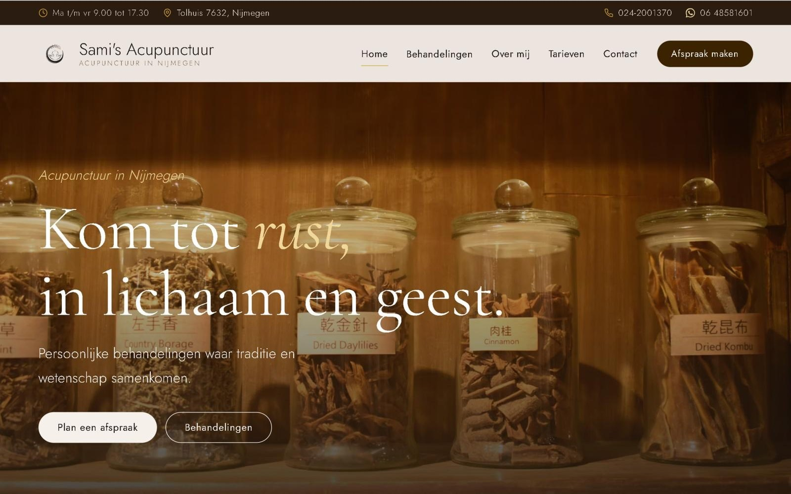

Home / Voorbeelden / Sami's Acupunctuur
een traject van dichtbij
Hoe voelt het om je merk opnieuw neer te zetten?
Loop mee met Samia van Sami's Acupunctuur in Nijmegen. Je leest het niet alleen, je doet het zelf. Kijken, kiezen, schuiven en schrappen. Dan weet je precies wat je te wachten staat.
Begin bij de koffieHet begint met een kop koffie en je huidige site.
Ik vraag niet meteen wat je wilt. Eerst kijken we samen naar wat er nu staat. Tik op de bolletjes. Dit zag ik bij Samia.

Geen oordeel. Gewoon eerlijk kijken.
Wat moet iemand voelen als hij binnenkomt?
Dit is de vraag waar alles om draait. Probeer het zelf voor je eigen bedrijf. Kies er drie.
Nog drie te gaan
Jouw drie:
Bij Samia werd het rust, aandacht en traditie. Die drie woorden bepalen daarna elke keuze. De kleur, de foto, de letter en elke zin op de site.
Dan schuiven we tot het klopt.
Sleep langzaam van links naar rechts. Zo ging Samia's site van koel en algemeen naar warm en van haar.

Sami's AcupunctuurAcupunctuur in Nijmegen HomeBehandelingenOver mijContact Afspraak maken
Ontdek Acupunctuur
Kom tot rust, in lichaam en geest.Kom tot rust,
in lichaam en geest.
Koel, wit en algemeen.
- Espresso
- Donkerbruin
- Goud
- Zand
- Crème
Minder tekst. Meer rust.
De eerste versie voelde nog te strak en te vol. Dat mag je gewoon zeggen, daar is deze stap voor. Druk op de knop en kijk wat er overblijft.
Acupunctuur kan ondersteuning bieden bij veel verschillende klachten, ook kan het helpen bij voorkomen van psychische of fysieke klachten. Elke behandeling is anders en afhankelijk van de klachten. Daarom kun je een behandeling verwachten die compleet is toegespitst op het verbeteren van jouw energiebalans. Ik kijk niet slechts naar de klacht of de ziekte, maar naar jou als geheel.
Zelfde gevoel. Een kwart van de woorden.
En dan staat het er. Op je eigen naam.
Nieuw logo, warme kleuren, een eigen domein. Bellen, appen en een afspraak maken altijd binnen handbereik. Op de computer en op de telefoon.


en nu jij
Zin om dit zelf te ervaren?
Het begint precies hetzelfde. Een kop koffie en jouw huidige site. Het eerste voorstel is gratis, en pas als het klopt beslis je of we verder gaan.